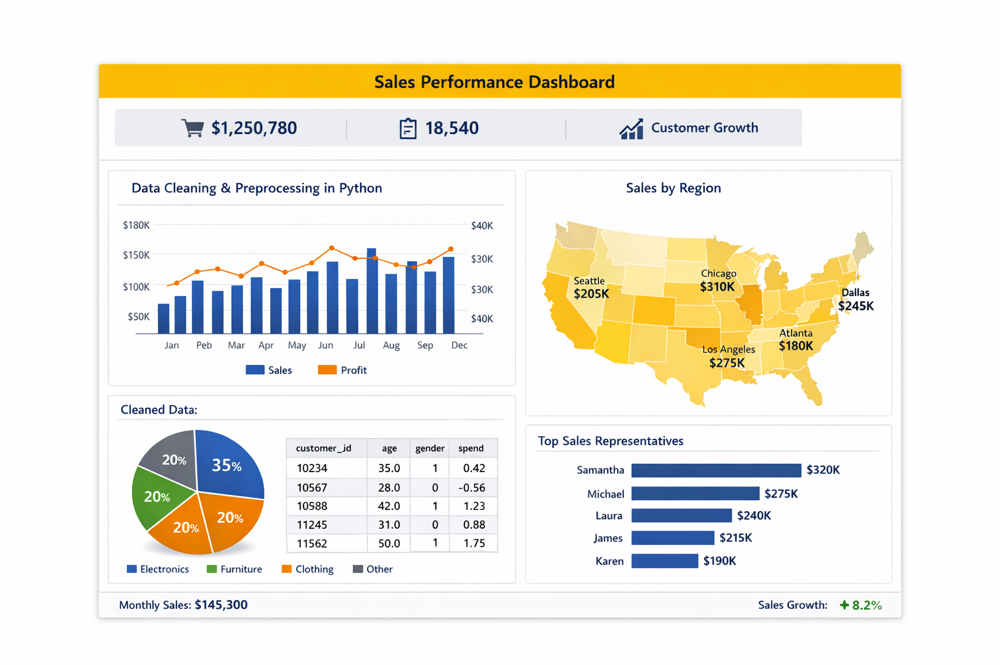

Full Power BI project breakdown
This project showcases a fully interactive Power BI dashboard designed to track sales performance across regions, products, and customer segments. It integrates SQL‑cleaned data, Power Query transformations, and advanced DAX measures to deliver actionable insights for business stakeholders.

Built a star schema model with fact and dimension tables. Ensured relationships were optimized for fast performance and accurate cross‑filtering.
Cleaned and transformed raw sales data using Power Query. Applied data types, merged queries, removed duplicates, and created custom calculated columns.
Created advanced DAX measures including YoY Growth, Total Sales, Profit Margin, Customer Churn, and dynamic KPI indicators.
Designed drill‑through pages, slicers, tooltips, and dynamic visuals to help users explore performance trends across multiple dimensions.
Outcome: Reduced manual reporting time by 40% and improved visibility of sales KPIs across the business.